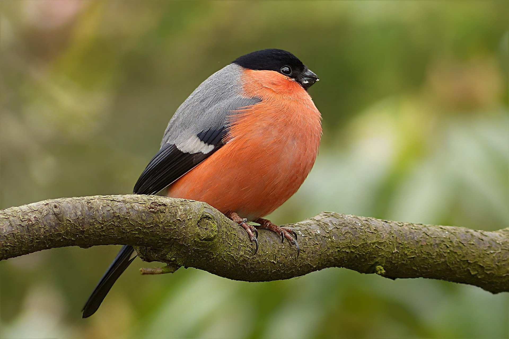

Atlas Ptaków
Gil
Gil zwyczajny, gil (Pyrrhula pyrrhula) – gatunek małego ptaka z rodziny łuszczakowatych (Fringillidae), zamieszkujący Eurazję. Nie jest zagrożony.
Szpak

szpak (Sturnus vulgaris) – gatunek średniej wielkości ptaka z rodziny szpakowatych (Sturnidae). Częściowo wędrowny. Pierwotnie zamieszkiwał wyłącznie Eurazję.
Wilga
Wilga zwyczajna (Oriolus oriolus) – gatunek średniej wielkości wędrownego ptaka wróblowego z rodziny wilgowatych (Oriolidae), jedyny z tej rodziny rozmnażający się w północnej strefie umiarkowanej.
Śpiewak

śpiewak (Turdus philomelos) – gatunek średniej wielkości ptaka z rodziny drozdowatych (Turdidae), zamieszkującego Eurazję.
Jaskółka
jaskółka dymówka (Hirundo rustica) – gatunek niewielkiego ptaka wędrownego z rodziny jaskółkowatych (Hirundinidae).